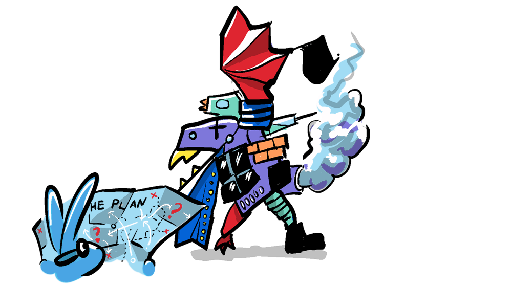
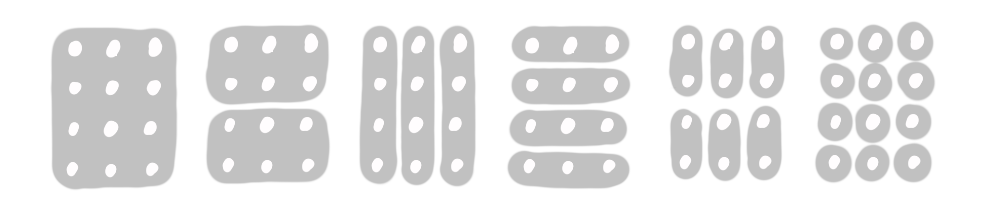

Have you ever wondered what the world would be like if you hadn't been born? Would an entirely different person have taken your place? How about if humans had never emerged? Could another species have evolved higher levels of intelligence instead of us? What if life, as we know it, didn't emerge—could some life-form, based on entirely different fundamental chemicals, have arisen in our place?
This post questions our collective perspective of the world—drawing on science fiction and interrogating some real world 'accidents of history' that might be reevaluated.
We will never know if things could have been vastly different than they are, because our existence precludes the existence of alternative humans, species, or life-forms, simply because we were here first.
"As soon as the replicator was born it must have spread its copies rapidly throughout the seas, until the smaller building block molecules became a scarce resource"—Richard Dawkins (The Selfish Gene)
In marketing, this is called the first mover advantage, and we see it play out in the survival of products, with new innovations being out-competed, absorbed into larger companies, or just never attempted (due to their seeming futility).

We can often take the current state of the world as an inevitable product of the arrow of history. Thinkers like Robert Wright see increasing non-zero-sumness as the universal direction, while fatalism takes inevitability to an extreme, asserting that if the clock were wound back, it would play out exactly the same way.
As a somewhat agnostic determinist, I take the perspective that emergence is the determining factor in the progress of life, allowing for many different paths to emerge from the same initial conditions. From this perspective, things could be very different.
But even though I hold a position, I do enjoy questioning my assumptions through reading science fiction, and one such assumption I share with most, is the linear nature of causality.
"We experienced events in an order, and perceived their relationship as cause and effect. They [the alien septopods] experienced all events at once, and perceived a purpose underlying them all."
- Louise Banks
(A Story Of Your Life)
Ted Chiang's short story "A Story of Your Life"—the basis for the movie "Arrival" (spoiler alert) plays out in a deterministic (in this case, fatalistic) universe, where reality is circular, and causality is time-independent.
"What made it possible for me to exercise freedom of choice also made it impossible for me to know the future. Conversely, now that I know the future, I would never act contrary to that future..."
This circular conception of determinism is reflected in the septopods' language, and it is through the linguist Louise Banks, communicating in this language, that she develops, in herself, their ability to see the future. For the reader Chiang uses the story to question our conception of causality and shows how language shapes perception.
In contrast to the linear progression of words from left to right in alphabetical languages like English, the septopods use two-dimensional space to arrange linguistic elements. Louise Banks explains that in a semagram...
"... a noun is identified as subject or object based on the orientation of its logogram relative to that of the verb."
Could we reassess the linear progression of written text?
To an English speaker, logographic languages like Chinese Hanzi or Japanese Kanji provide an insight into how words can be represented non-linearly. Semagrams go further, with the capacity to represent the meaning of entire sentences in immediately understandable symbols.
What would it look like to do this using English words?

While a wholesale reevaluation of linear text might be a non-starter, we do already use two-dimensional layouts in the form of; checklists, outlines, and mind-maps, or in the tabbed layout coders use.
Chiang draws the analogy to mathematical notation, where we use spatial representation to better represent complex abstract concepts and their relationships.
"I bet you that learning their two-dimensional grammar will help you when it comes time to learn their mathematical notation."—Gary Donnelly (A Story Of Your Life)
Could we utilize these two-dimensional features to further enhance reading? For instance, very complicated sentences could be simplified and expanded when necessary, like this (tap to expand):
You could imagine a sentence
with many embedded clauses
which are essentially clarifications
that could be omitted
were one to assume prior knowledge
on the part of the reader
of such grammatical mechanisms from the sentence which might
actually be really unclear
linearly but might make more sense when clearly outlined.
This is a silly example, as it's unnecessarily over-complicated. Hiding detail like this also undermines authorship in determining the focus of a sentence. However, another form of somewhat hidden text is becoming commonplace; links—on the web and in note-taking apps like Obsidian. These integrate an additional dimension of hidden depth within text. Considering this evolution of language in this way might prompt us to ask...
... what else might we question?
In order to break out of their biases, philosophers will attempt to return to first principles. This involves stripping away knowledge that is based on subjectivity, assumptions, or metaphor to get to ground truth. The task is then to build up new frameworks of understanding from more solid foundations. This is sometimes referred to as Foundationalism.
Ted Chiang takes this approach when writing many of his short stories. In "A Story of Your Life" he stripped away assumptions about time and causality, and then, for the purposes of science fiction, switched assumptions at the base to create a world where causality is not contingent on linear time.

Now, going back to first principles can be fraught, for this very reason—it is easy, once you've stripped away all the 'common sense' accumulated by humanity over millennia, to accidentally insert a flawed assumption at the base. Building a model from that flawed foundation, magnifies this flaw, leading to a radically flawed .
Bearing in mind the potential pitfalls, let's explore some historical accidents that might be remedied with the benefit of hindsight.
Those who have had the misfortune of sharing a work computer with me will know I use a keyboard layout that scrambles ordinary typing into absolute gibberish.

It's called 'Dvorak' and is apparently more ergonomic than the standard...

... keyboard.
The story goes that the QWERTY layout was designed so neighbouring keys wouldn't be pressed in sequence, to avoid key-jamming in early typewriters. But once the jamming issue was resolved through mechanical improvements, some proposed the layout should be changed for better typing comfort and speed. However, at this point in time, 500 units had already been sold, and therefore the company decided against changing the layout and causing customer confusion. 100 years later and we have billions of keyboards sporting an inefficient layout that gives everyone RSI.
This (potentially apocryphal) story illustrates how, through an accident of history, the first mover advantage can result in a suboptimal design gaining global dominance.
The QWERTY keyboard layout is an example of a local maximum, which exists due to the inertia of history. A local maximum is where an option is much better than its neighboring options, but is not the optimal choice.
People have learned to type using QWERTY, computers are configured with it by default, and keyboard shortcuts are associated with those keys. So, deviation from this norm comes at a cost—I know, I've been using Dvorak for 20 years, and even today I run into friction. This comes in the form of confused coworkers trying to use my computer, or apps that don't use independent keyboard shortcuts, or, when I am forced to use a QWERTY keyboard and I look like someone who's never used a keyboard.
In order to get to the optimal solution (universal adoption of Dvorak) people have to traverse negative terrain. In this case, doing so is likely to remain the domain of masochistic individuals for whom typing comfort, and the nerd value, are worth it.
One area which really could be a local maximum is also probably the least tractable of all systems: the decimal system—a system so ubiquitous, it's not even apparent we have a choice.
So, why do we use the decimal system?
A naive answer to why we have a decimal ( 10) counting system could be that we have ten fingers... and the naive answer turns out to be the actual answer. The decimal system was developed arbitrarily based on the number of fingers we have. The greatest mathematicians on earth are using a system that prioritizes the teaching of finger-counting to pre-schoolers.
We have toyed with other counting systems through history; base 2, 3, 4, 5, 8, 12, 16, 20, and 60—and a few of these are particularly interesting.
When Abe Lincoln orated "Four score and seven", he was referencing a biblical vigesimal counting system for rhetorical effect. While the Mayans and Aztecs used a sophisticated base 20 calendar and number system represented with dots and bars.
The Sumerian and Babylonian sexagesimal system, developed around 3000 BCE, coincided with (and contributed to) advancements in mathematics, astronomy, and time-keeping. Its legacy is evident in how we measure time (60 seconds in a minute, 60 minutes in an hour) and angles (360 degrees in a circle). Sexagesimal benefits from being highly divisible, with 12 factors.
One of the key factors in the utility of a number system is how easily it is divided. For this reason, Duodecimal (base 12) may superior to decimal. It is divisible by 1, 2, 3, 4, 6, and 12 (that's 3 factor pairs, as opposed to decimal's 2). 12 is also a factor of 60, making many mathematical operations with base 12 much simpler than they are with decimal.

But there are some kids on the block.
The rise of computation has brought with it systems based on binary, with transistors in computers acting as switches between 'off' or 'on' (0 or 1).
This underlying binary framework is why numbers associated with computers are commonly powers of 2: 32 or 64-bit operating systems, 8 bits in a byte, 1024 bytes in a "kilobyte." RAM and Graphics capacity is commonly 4, 8, 16, 32, 64, etc. But, while binary is perfect for computers, it is unworkable as a human-level mathematical framework because it is far too verbose. 1,024 in decimal equates to 10000000000 in binary

Finally, my pick is Hexadecimal (base 16), which has risen to prominence in the era of computers because it aligns perfectly with binary values. 10 in hexadecimal is equivalent to 10000 in binary (16 in decimal), and 100 in hexadecimal is equivalent to 100000000 in binary (or 256 in decimal). Hexadecimal values are used in web colors, where each channel has 256 potential values (0-255 or in hexadecimal 0-FF). The value for white in hexadecimal is FFFFFF, which is equivalent to 111111111111111111111111 in binary.

Having a system that aligns with binary will make computer-based math and programming easier and more efficient. 16 is also more divisible than 10. Like duodecimal, it has 3 factor pairs. It is also a square number, which gives it other mathematically useful properties and, in some ways, makes it to learn.

Learning hexadecimal would require students to learn 16 different numerical , which might be difficult, but is possible, given that English speakers remember the order of 26 letters of the alphabet.
Also, the intuitiveness of the decimal system, when it comes to finger-counting, shouldn't be discounted. A low barrier to entry for students learning maths might be more important than a more useful counting system. However, lying wide awake one night, I conceived of away to finger-count to 16 using your thumbs as a switch.

You could almost call it intuitive, given we have 8 fingers ackshually.
When contemplate teaching my daughter hexadecimal arithmetic, I am confronted with the same issue I had with Dvorak. While it might be best for humanity to collectively adopt hexadecimal, it's an uphill battle for an individual in a population that does not. Teaching my daughter might actually confuse her use of decimal at school—like when I go back to typing on a QWERTY keyboard.

In any problem where the collective is using a sub-optimal system, it will be very difficult for an individual to overcome collective inertia. This is something we've covered in Unlocking Solutions, where we discussed coordination problems—like pins in a lock, if all are not aligned in unison, no progress is possible.
There may be areas where local maxima—whether it be a keyboard layout, counting system, language, product monopoly, or dominant species—might preclude the development of the best solution. However, there are other examples where this is not the case, aswell as reasons why the optimal solution might not be the best option (read on, this will make sense).
When different paths with different initial genetics and environments lead to the same outcome, this is called convergent evolution. Eyes, for instance, are said to have independently evolved more than 20 times. If a solution has enough utility "nature (in the words of another sci-fi icon) finds a way." In this way, we may still arrive at optimal solutions, despite different origins.
In terms of the 'First Mover Advantage' in marketing, there is also a counterpoint where smaller companies can thrive because they exist in smaller (less visible) niches. The phenomenon of tech start-ups is an example of how innovation often happens outside of the tech behemoths, because those behemoths are victim to their own form of inertia. Hexadecimal is an example which has found a niche in computer science where it is being cultivated independent of the dominant (decimal) system.
There is another reason not to get too hung up on the optimal solution, and that is Goodhart's Law:
"When a measure becomes a target, it ceases to be a good measure."
If we focus too much on finding a technically optimal solution, we may find that we compromise unappreciated features of a sub-optimal solution. Goodhart's Law calls for a satisficing approach that looks to optimize for a range of relevant measures rather than a single metric. My short excursion into re-structuring English, for instance, immediately revealed my own lack of appreciation for the complexity enabled by linear writing.
In many respects the first mover has a strong influence on historical inertia. While humanity might, through trial and error, eventually end up with optimal solutions, it's fun to stand back, like Ted Chiang, and ask "could things be different?". Whether you're looking at a more ergonomic keyboard, your government, your career, or your personal life, asking "did I choose this?" or "is it another accident of history?" might just enable us to change our lives for the better.